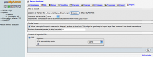
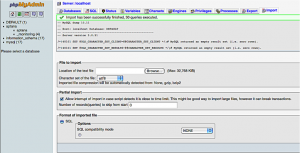
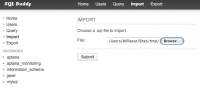
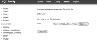
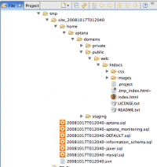

Prerequisite: You must have previously used the My Cloud site backup feature and copied that file to your computer.
Restoring a site can be divided into three parts, files, database and source code repository, and you only need to do the parts relevant to your site. Further, you can restore only the parts necessary in a given situation, for instance if your database somehow became corrupted you can restore it and not the files or SVN repository.
Before starting the instructions for each restore type, unzip the backup so the files and directories are easily accessible.
Contents |
Restoring a MySQL Database
- Open your cloud's PHPMyAdmin by clicking the PHPMyAdmin link on the My Cloud Overview Control Panel and login as required
- Select the Import tab
- Click the Browse button and specify the .sql file from the backup
- Click the Go button (at the bottom right) to launch the import
- Close phpMyAdmin and return to Aptana Studio
  Import Preparation
Import Preparation
{kind=link}
 Import Preparation
{kind=link}
Restoring a SQLite Database
 SQL Buddy before an import
{kind=link}
- On My Cloud -> Overview, click the Database Web Admin link to open your Cloud's SQL Buddy in your web browser.
- If the database you plan to restore already exists you may either drop it or edit the first command in the backup .sql file, changing the action CREATE DATABASE to USE.
- In SQL Buddy click the Import link, use the Browse button to select the backup .sql file and click Import.
 SQL Buddy after import
{kind=link}
SQL Buddy does not count the commands in an SQL dump file as transactions so after the import completes you may see a message that zero transactions weere processed. Refresh your web page and click the link in the left side nav for the database you just imported and you should see the correct results.
Restoring Files
 Copying backup files to a Cloud
{kind=link}
- Open Studio's File browser
- Scroll down the File browser tree and expand the Cloud folder and then the folder for the site you want to restore
- Move up in File browser to the directory where you unzipped the backup and select the directory called Home inside it
- Expand the Aptana and Domains directories inside Home; inside Domains should be three directories: private, public and staging
- Expand the three directories by opening the web and htdocs directories in each
- Private site: If you use Aptana Jaxer then the backup has your local_jaxer folder, and you can drag the backup copy and drop it onto the private section of your Cloud
- Staging site: If you use the staging section then drag the contents of the htdocs folder and drop it onto the staging section of your Cloud
- Public site: Drag the contents of the htdocs folder and drop it onto the public section of your Cloud
Restoring an SVN repository
This part is only necessary if you're using the site's Subversion repository
- Upload the .svn file to your site’s public root
- SSH into your site
- cd /home/aptana/domains/public/svn
- rm -rf repo
- mkdir repo
- ls -l
- umask 002
- chmod g+w repo
- /opt/local/bin/svnadmin create --fs-type fsfs repo
- /opt/local/bin/svnadmin load repo < /home/aptana/domains/public/web/htdocs/[name of your .svn file]